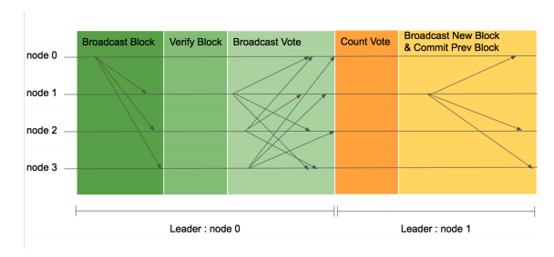

Why Private blockchain¶
비트코인이나 이더리움과 같이 공개된 블록체인 기술은 실제 엔터프라이즈 서비스에 적용하기 부족한 낮은 성능 및 데이터 공개 이슈가 있습니다. 이러한 문제를 해결하기 위해서 R3 Corda와 같은 프라이빗 블록체인이 개발되어지고 있습니다.
프라이빗 블록체인의 특징
- 금융, 공공 등 규제 기반 거래에 적합한 거래방식 지원
- 허가된 사용자들의 합의과정을 통해 거래가 확정되므로 거래 확정의 주체가 명확하다.
- 규제 및 컴플라이언스 요소들을 만족시킬 수 있도록 커스터마이징 가능하게 설계
- 거래의 성격에 따라 합의 알고리즘, 블록생성 주기 등을 최적화하여서 빠른 속도가 필요한 거래에도 활용 가능
합의 알고리즘간 비교표¶
구분|PBFT/Sieve|PoW|PoS ---|---|---|--- 통신 비용|각 서버간 통신으로 높음|로컬 통신만으로 비용 낮음|로컬 통신만으로 비용 낮음 결함허용대수|1/3미만까지 보증(정확히 1/3인 경우 대응불가|1대라도 남아있다면 문제 없음|1대라도 남아있으면 문제 없음 다수결 대신이 되는 것|다수결|CPU 계산량|보유한 자산의 크기 CPU 연산비용|낮음|높음|중간 정도, PoW 보다 낮음 권한의 분산|참가 서버 모두가 평등|전기세가 낮은 지역에 집중될 수 있음|일반적으로 화폐 보유는 집중될 가능성 높음 참가 서버의 조건|신뢰된 서버만 참가|어떤 서버도 참가 가능|어떤 서버도 참가 가능 비밀 보호를 위한 인증|사전에 서로 신뢰한 공개 암호화키를 사용|참가시 준비한 공개 암호화 키를 사용|참가시 준비한 공개 암호화 키를 사용
LFT Normal Case¶

** 이미지 기본 설명**
- 각 수평선은 블록체인 네트워크에 참여하는 노드를 나타내며 화살표는 한 노드가 다른 노드에 보내는 메시지를 의미한다.
- 네트워크 이벤트의 순서는 왼쪽에서 오른쪽으로 일어난다. 따라서 왼쪽에서 일어난 이벤트가 오른쪽에서 일어난 이벤트보다 먼저 일어난 이벤트이다.
- 가장 밑의 평행성은 기간에 따른 리더를 표시하고 있다.
LFT 합의순서
- 합의가 시작되면 검증 노드들은 리더 노드에 처리하기 원하는 트랜잭션을 전송한다.
- 리더 노드는 수집한 트랜잭션을 이용하여 블록을 생성하고 자신의 서명과 함께 다른 모든 검증 노드에 전송한다.(Broadcast Block)
- 각 검증 노드들은 블록을 받으면 다음의 순서로 검증한다.
- 현재 리더가 블록을 생성했는지 확인한다.
- 블록의 높이와 이전 블록 해시가 올바른지 확인한다.
- 블록의 메세지가 올바른지 확인한다.(Verify block).
- 검증 노드는 검증 결과에 따라 투표 메시지를 모든 노드들에게 보낸다(Broadcast Vote)
- 각 노드가 정족수 이상의 투표를 받게 되면 해당 높이의 블록을 자신의 블록체인에 추가한다(Count Vote). 리더 노드는 정족수 이상의 투표를 받으면 해당 높이의 블록생성을 성공으로 취급하고 다른 노드에서 받은 트랜잭션을 모아 새로운 높이의 블록을 생성하고 다른 모든 피어에 새로운 높이의 블록 메시지를 보낸다.
생성된 블록이 제니시스 블록이 아닌 경우 검증 노드들은 블록에 포함된 이전 블록 투표 검증 메시지들이 올바른지 검증한다. 같은 블록 해시에 대한 투표메시지가 정족수 이상 포함되어 있는지 검증한다. 투표 메시지 공유시 정족수 이상의 투표를 받지 못한 노드도 이전 블록을 자신의 블록체인에 추가할수 있다.
LFT 알고리즘의 합의 과정¶
- 네트워크가 시작되면 검증노드(검증을 통해 합의에 참여 하는 노드)들은 사전에 결정되어 있는 리더 노드에게 처리를 원하는 트랜젝션을 전송
- 리더 노드는 수집한 트랜잭션을 이용하여 블록을 생성하고 자신의 서명과 함께 모든 검증 노드에게 전송
- 각 검증 노드들은 블록을 받으면 다음의 순서로 블록을 검증합니다.
- 현재의 리더가 블록을 생성했는지 확인.
- 블록 높이와 이전 블록 해시가 올바른지 확인.
- 블록의 데이터가 올바른지 확인.
검증 노드는 검증과정이 옳다면 Vote 데이터를 생성하여 네트워크의 모든 노드들에게 전파합니다.
Vote 데이터를 전체 노드에게 전파하는 것은 매우 중요한데 이는 리더 노드가 비잔틴일 경우 정족 수 이상의 노드들에게만 블록을 전파하여 특정 노드들을 네트워크로부터 분리하도록 시도할 수 있기 때문입니다.
이러한 문제를 방지하기 위해 모든 Peer에게 Vote 데이터를 전파하며 이는 기존 Raft 알고리즘과의 다른 점입니다. 이 과정에서 블록을 못받은 노드는 블록이 생성되었는지에 대한 정보를 알 수 있고 다른 노드에게 블록을 요청할수 있습니다.
$ /usr/bin/ruby -e "$(curl -fsSL https://raw.githubusercontent.com/Homebrew/install/master/install)"
$ /usr/bin/ruby -e "$(curl -fsSL https://raw.githubusercontent.com/Homebrew/install/master/install)"
==> This script will install:
/usr/local/bin/brew
/usr/local/share/doc/homebrew
/usr/local/share/man/man1/brew.1
/usr/local/share/zsh/site-functions/_brew
/usr/local/etc/bash_completion.d/brew
/usr/local/Homebrew
==> The following existing directories will be made group writable:
/usr/local/bin
/usr/local/share
/usr/local/share/man
/usr/local/share/man/man1
/usr/local/share/man/man3
/usr/local/share/man/man5
/usr/local/share/man/man7
==> The following existing directories will have their owner set to donghanlee:
/usr/local/bin
/usr/local/share
/usr/local/share/man
/usr/local/share/man/man1
/usr/local/share/man/man3
/usr/local/share/man/man5
/usr/local/share/man/man7
==> The following existing directories will have their group set to admin:
/usr/local/bin
/usr/local/share
/usr/local/share/man
/usr/local/share/man/man1
/usr/local/share/man/man3
/usr/local/share/man/man5
/usr/local/share/man/man7
==> The following new directories will be created:
/usr/local/Cellar
/usr/local/Homebrew
/usr/local/Frameworks
/usr/local/etc
/usr/local/include
/usr/local/lib
/usr/local/opt
/usr/local/sbin
/usr/local/share/zsh
/usr/local/share/zsh/site-functions
/usr/local/var
==> The Xcode Command Line Tools will be installed.
Press RETURN to continue or any other key to abort
==> /usr/bin/sudo /bin/chmod u+rwx /usr/local/bin /usr/local/share /usr/local/share/man /usr/local/share/man/man1 /usr/local/share/man/man3 /usr/local/share/man/man5 /usr/local/share/man/man7
Password:
==> /usr/bin/sudo /bin/chmod g+rwx /usr/local/bin /usr/local/share /usr/local/share/man /usr/local/share/man/man1 /usr/local/share/man/man3 /usr/local/share/man/man5 /usr/local/share/man/man7
==> /usr/bin/sudo /usr/sbin/chown donghanlee /usr/local/bin /usr/local/share /usr/local/share/man /usr/local/share/man/man1 /usr/local/share/man/man3 /usr/local/share/man/man5 /usr/local/share/man/man7
==> /usr/bin/sudo /usr/bin/chgrp admin /usr/local/bin /usr/local/share /usr/local/share/man /usr/local/share/man/man1 /usr/local/share/man/man3 /usr/local/share/man/man5 /usr/local/share/man/man7
==> /usr/bin/sudo /bin/mkdir -p /usr/local/Cellar /usr/local/Homebrew /usr/local/Frameworks /usr/local/etc /usr/local/include /usr/local/lib /usr/local/opt /usr/local/sbin /usr/local/share/zsh /usr/local/share/zsh/site-functions /usr/local/var
==> /usr/bin/sudo /bin/chmod g+rwx /usr/local/Cellar /usr/local/Homebrew /usr/local/Frameworks /usr/local/etc /usr/local/include /usr/local/lib /usr/local/opt /usr/local/sbin /usr/local/share/zsh /usr/local/share/zsh/site-functions /usr/local/var
==> /usr/bin/sudo /bin/chmod 755 /usr/local/share/zsh /usr/local/share/zsh/site-functions
==> /usr/bin/sudo /usr/sbin/chown donghanlee /usr/local/Cellar /usr/local/Homebrew /usr/local/Frameworks /usr/local/etc /usr/local/include /usr/local/lib /usr/local/opt /usr/local/sbin /usr/local/share/zsh /usr/local/share/zsh/site-functions /usr/local/var
==> /usr/bin/sudo /usr/bin/chgrp admin /usr/local/Cellar /usr/local/Homebrew /usr/local/Frameworks /usr/local/etc /usr/local/include /usr/local/lib /usr/local/opt /usr/local/sbin /usr/local/share/zsh /usr/local/share/zsh/site-functions /usr/local/var
==> /usr/bin/sudo /bin/mkdir -p /Users/donghanlee/Library/Caches/Homebrew
==> /usr/bin/sudo /bin/chmod g+rwx /Users/donghanlee/Library/Caches/Homebrew
==> /usr/bin/sudo /usr/sbin/chown donghanlee /Users/donghanlee/Library/Caches/Homebrew
==> /usr/bin/sudo /bin/mkdir -p /Library/Caches/Homebrew
==> /usr/bin/sudo /bin/chmod g+rwx /Library/Caches/Homebrew
==> /usr/bin/sudo /usr/sbin/chown donghanlee /Library/Caches/Homebrew
==> Searching online for the Command Line Tools
==> /usr/bin/sudo /usr/bin/touch /tmp/.com.apple.dt.CommandLineTools.installondemand.in-progress
==> Installing Command Line Tools (macOS High Sierra version 10.13) for Xcode-9.2
==> /usr/bin/sudo /usr/sbin/softwareupdate -i Command\ Line\ Tools\ (macOS\ High\ Sierra\ version\ 10.13)\ for\ Xcode-9.2
Software Update Tool
Downloading Command Line Tools (macOS High Sierra version 10.13) for Xcode
Downloaded Command Line Tools (macOS High Sierra version 10.13) for Xcode
Installing Command Line Tools (macOS High Sierra version 10.13) for Xcode
Done with Command Line Tools (macOS High Sierra version 10.13) for Xcode
Done.
==> /usr/bin/sudo /bin/rm -f /tmp/.com.apple.dt.CommandLineTools.installondemand.in-progress
==> /usr/bin/sudo /usr/bin/xcode-select --switch /Library/Developer/CommandLineTools
==> Downloading and installing Homebrew...
remote: Counting objects: 98251, done.
remote: Compressing objects: 100% (13/13), done.
remote: Total 98251 (delta 4), reused 6 (delta 2), pack-reused 98236
Receiving objects: 100% (98251/98251), 22.43 MiB | 1.68 MiB/s, done.
Resolving deltas: 100% (71407/71407), done.
From https://github.com/Homebrew/brew
* [new branch] master -> origin/master
* [new tag] 0.1 -> 0.1
* [new tag] 0.2 -> 0.2
* [new tag] 0.3 -> 0.3
* [new tag] 0.4 -> 0.4
* [new tag] 0.5 -> 0.5
* [new tag] 0.6 -> 0.6
* [new tag] 0.7 -> 0.7
* [new tag] 0.7.1 -> 0.7.1
* [new tag] 0.8 -> 0.8
* [new tag] 0.8.1 -> 0.8.1
* [new tag] 0.9 -> 0.9
* [new tag] 0.9.1 -> 0.9.1
* [new tag] 0.9.2 -> 0.9.2
* [new tag] 0.9.3 -> 0.9.3
* [new tag] 0.9.4 -> 0.9.4
* [new tag] 0.9.5 -> 0.9.5
* [new tag] 0.9.8 -> 0.9.8
* [new tag] 0.9.9 -> 0.9.9
* [new tag] 1.0.0 -> 1.0.0
* [new tag] 1.0.1 -> 1.0.1
* [new tag] 1.0.2 -> 1.0.2
* [new tag] 1.0.3 -> 1.0.3
* [new tag] 1.0.4 -> 1.0.4
* [new tag] 1.0.5 -> 1.0.5
* [new tag] 1.0.6 -> 1.0.6
* [new tag] 1.0.7 -> 1.0.7
* [new tag] 1.0.8 -> 1.0.8
* [new tag] 1.0.9 -> 1.0.9
* [new tag] 1.1.0 -> 1.1.0
* [new tag] 1.1.1 -> 1.1.1
* [new tag] 1.1.10 -> 1.1.10
* [new tag] 1.1.11 -> 1.1.11
* [new tag] 1.1.12 -> 1.1.12
* [new tag] 1.1.13 -> 1.1.13
* [new tag] 1.1.2 -> 1.1.2
* [new tag] 1.1.3 -> 1.1.3
* [new tag] 1.1.4 -> 1.1.4
* [new tag] 1.1.5 -> 1.1.5
* [new tag] 1.1.6 -> 1.1.6
* [new tag] 1.1.7 -> 1.1.7
* [new tag] 1.1.8 -> 1.1.8
* [new tag] 1.1.9 -> 1.1.9
* [new tag] 1.2.0 -> 1.2.0
* [new tag] 1.2.1 -> 1.2.1
* [new tag] 1.2.2 -> 1.2.2
* [new tag] 1.2.3 -> 1.2.3
* [new tag] 1.2.4 -> 1.2.4
* [new tag] 1.2.5 -> 1.2.5
* [new tag] 1.2.6 -> 1.2.6
* [new tag] 1.3.0 -> 1.3.0
* [new tag] 1.3.1 -> 1.3.1
* [new tag] 1.3.2 -> 1.3.2
* [new tag] 1.3.3 -> 1.3.3
* [new tag] 1.3.4 -> 1.3.4
* [new tag] 1.3.5 -> 1.3.5
* [new tag] 1.3.6 -> 1.3.6
* [new tag] 1.3.7 -> 1.3.7
* [new tag] 1.3.8 -> 1.3.8
* [new tag] 1.3.9 -> 1.3.9
* [new tag] 1.4.0 -> 1.4.0
* [new tag] 1.4.1 -> 1.4.1
* [new tag] 1.4.2 -> 1.4.2
* [new tag] 1.4.3 -> 1.4.3
* [new tag] 1.5.0 -> 1.5.0
* [new tag] 1.5.1 -> 1.5.1
* [new tag] 1.5.10 -> 1.5.10
* [new tag] 1.5.2 -> 1.5.2
* [new tag] 1.5.3 -> 1.5.3
* [new tag] 1.5.4 -> 1.5.4
* [new tag] 1.5.5 -> 1.5.5
* [new tag] 1.5.6 -> 1.5.6
* [new tag] 1.5.7 -> 1.5.7
* [new tag] 1.5.8 -> 1.5.8
* [new tag] 1.5.9 -> 1.5.9
HEAD is now at 96fd1a8c2 Merge pull request #3923 from reitermarkus/rubocop-cask
==> Tapping homebrew/core
Cloning into '/usr/local/Homebrew/Library/Taps/homebrew/homebrew-core'...
remote: Counting objects: 4688, done.
remote: Compressing objects: 100% (4486/4486), done.
remote: Total 4688 (delta 48), reused 653 (delta 17), pack-reused 0
Receiving objects: 100% (4688/4688), 3.81 MiB | 1.53 MiB/s, done.
Resolving deltas: 100% (48/48), done.
Tapped 4486 formulae (4,730 files, 11.9MB)
==> Cleaning up /Library/Caches/Homebrew...
==> Migrating /Library/Caches/Homebrew to /Users/donghanlee/Library/Caches/Homebrew...
==> Deleting /Library/Caches/Homebrew...
Already up-to-date.
==> Installation successful!
==> Homebrew has enabled anonymous aggregate user behaviour analytics.
Read the analytics documentation (and how to opt-out) here:
https://docs.brew.sh/Analytics.html
==> Next steps:
- Run `brew help` to get started
- Further documentation:
https://docs.brew.sh
Donghanui-MacBook-Pro:~ donghanlee$
b30dcb6cca7a0978999773a3767f8ee1868e7925686f7b35de653d94cdebcebb
curl http://localhost:9002/api/v1/peer/list | python -m json.tool
curl http://localhost:9000/api/v1/status/peer | python -m json.tool
curl http://localhost:9000/api/v1/status/score | python -m json.tool
curl -H "Content-Type: application/json" -X POST -d '{"jsonrpc":"2.0","method":"propose","params":{"proposer":"RealEstateAgent" , "counterparties": ["leaseholder","jinho"], "content": "Theloop APT 101-3001, lease for 3 months from 3th April,2018", "quorum": "3"}}' http://localhost:9000/api/v1/transactions | python -m json.tool
curl http://localhost:9000/api/v1/transactions/result?hash=b30dcb6cca7a0978999773a3767f8ee1868e7925686f7b35de653d94cdebcebb | python -m json.tool
curl -H "Content-Type: application/json" -X POST -d '{"jsonrpc": "2.0","channel":"channel1","method":"get_user_contracts","id":"11233","params":{"user_id":"jinho"}}' http://localhost:9000/api/v1/query | python -m json.tool
curl http://localhost:9000/api/v1/status/peer | python -m json.tool
https://www.dropbox.com/sh/onsktj6bfo1r27f/AACuYVi2038vg1t7vmjaC2o6a?dl=0